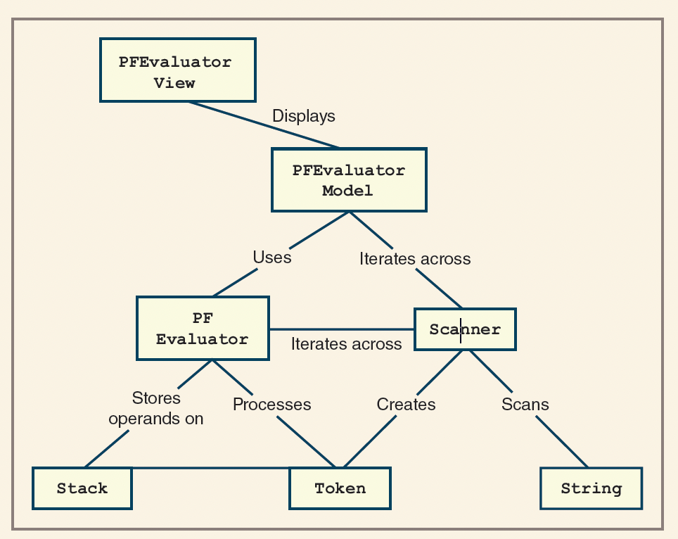

Stacks Application: PostFix
Fred Agbo
2026-03-02
Announcements
- Welcome to week 8!
- Midterm exam is this week Wednesday during class hours.
- Those with AES accommondation:
- Do not forget to copy me in the email to the
Testing Centerin case you are taking the test there.
- Do not forget to copy me in the email to the
- Solution to
midterm practice questionsare posted on Canvas
- Those with AES accommondation:
- Mini project 2 will be posted on Wednesday after the Midterm and it will be due on Wednesday next week
Application of Stack: Modeling Arithmetic Expression!
Case Study 1: Evaluating Postfix Expression
- The case study presents a program that evaluates postfix expressions.
- The program allows the user to enter an arbitrary postfix expression and then displays the expression’s value or an error message
- The program here uses stack-based algorithm for evaluating postfix expressions.
- Main task:
- Write an interactive program for evaluating postfix expressions.
Analysis of the problem
- There are many possibilities for designing the user interface.
- In an educational setting, it’s beneficial for users to experiment with multiple expressions and retain a transcript of their results.
- Errors in expressions should not halt the program; instead, they should produce informative messages that help users understand where the evaluation failed.
- With these requirements, a user interface is proposed that:
- Allows repeated input of expressions.
- Displays results or error messages for each attempt.
- Maintains a session transcript for review and learning.
Analysis of the problem
Enter a postfix expression: 6 2 5 + *
6 2 5 + *
42
Enter a postfix expression: 10 2 300 *+ 20/
10 2 300 * + 20 /
30
Enter a postfix expression: 3 + 4
3 + 4
Error:
Too few operands on the stack
Portion of the expression processed: 3 +
Operands on the stack: : 3
Enter a postfix expression: 5 6 %
5 6 %
Error:
Unknown token type
Portion of the expression processed: 5 6 %
Operands on the stack: : 5 6
Enter a postfix expression:Analysis of the problem
- The user interface operates as follows:
- The user is prompted to enter a postfix expression on a single line.
- Arbitrary spacing is allowed, as long as operands are separated by whitespace.
- After submission, the program redisplays the expression with standardized spacing (one space between tokens).
- The result or an error message is shown on the next line.
- The prompt for another expression appears; the session continues until the user submits an empty line to quit.
Analysis of the problem
- The program should detect and report all input errors, whether intentional or unintentional.
- Common errors include:
- Too many operands: More than one operand remains on the stack at the end of evaluation.
- Too few operands: An operator is encountered when fewer than two operands are available on the stack.
- Unrecognizable tokens: The expression contains tokens other than integers, arithmetic operators (+, -, *, /), or whitespace.
- Division by zero: The expression attempts to divide by zero.
Analysis of the problem
Examples of Postfix Expression Errors
Expression:
Error: Expression contains no tokens
Portion of expression processed: none
The stack is empty
Expression: 1 2 3 +
Error: Too many operands on the stack
Portion of expression processed: 1 2 3 +
Operands on the stack: 1 5
Expression: 1 + 2 3 4 *
Error: Too few operands on the stack
Portion of expression processed: 1 +
Operands on the stack: 1
Expression: 1 2 % 3 +
Error: Unknown token type
Portion of expression processed: 1 2 %
Operands on the stack: 1 2
Expression: 1 2 0 / +
Error: divide by zero
Portion of expression processed: 1 2 0/
Operands on the stack: 1Modeling of Expression Evaluation
The following class diagram illustrates the relationships between the main components for evaluating postfix expressions:

Modeling of Expression Evaluation
- Key points:
- Both the
Modeland theEvaluatorclasses utilize theScannerclass. - The
Evaluatoruses theScannerto parse tokens from the input expression. - The
Modeluses theScannerto format and standardize the expression string for display and processing. - This design promotes code reuse and simplifies string manipulation tasks.
- Both the
Modeling of Expression Evaluation
- PFView (View Class):
- Handles user interaction.
- When the user presses Enter/Return:
- Calls the model to format the expression (ensures one space between tokens) and displays it.
- Calls the model to evaluate the expression and displays the result.
- If an exception occurs, catches it, retrieves error details from the model, and displays informative error messages.
Modeling of Expression Evaluation
- PFEvaluatorModel (Model Class):
- Responsible for formatting and evaluating expression strings.
- Raises exceptions for syntax errors and reports its internal state for error handling.
- Divides its work into two main processes:
- Scanner: Scans the input string and extracts tokens.
- PFEvaluator: Evaluates the sequence of tokens.
- The output of the Scanner is used as input for the PFEvaluator.
- Both Scanner and PFEvaluator are encapsulated as separate classes to promote reuse and manage complexity.
Modeling of Expression Evaluation
- Scanner Class:
- Accepts an input string and produces a sequence of tokens.
- Instead of returning all tokens at once, provides
hasNextandnextmethods to iterate through tokens one at a time. - This design allows the evaluator to process tokens sequentially and handle errors as they occur.
- Token Class:
- Represents individual tokens with a
valueand atype. - Types are defined by integer constants:
PLUS,MINUS,MUL,DIV, andINT.- The first four correspond to the characters
+,-,*, and/. INTtokens are created by converting numeric substrings (e.g.,"534") to integers.
- The first four correspond to the characters
- Each token can provide a string representation of itself for display or debugging.
- Represents individual tokens with a
Modeling of Expression Evaluation
- Evaluator Class:
- Takes a scanner as input and iterates over its tokens.
- Uses a stack-based algorithm to evaluate the postfix expression.
- Returns the computed value or raises an exception if an error is encountered (e.g., too few operands, division by zero).
- Can report its internal state at any point, aiding in debugging and error reporting.
- Design Rationale:
- Separating scanning (tokenization) from evaluation promotes modularity and code reuse.
- The use of token types and values simplifies parsing and evaluation logic.
- The evaluator’s ability to expose its state supports informative error messages and educational feedback.
Modeling of Expression Evaluation
The updated interaction diagram illustrates the methods and relationships among the main components for evaluating postfix expressions:


Tokens Implementation
"""Token program for processing expressions."""
class Token:
UNKNOWN = 0 # Unknown
INT = 4 #Integer
MINUS = 5 # minus operator
PLUS = 6 # Plus Operator
MUL = 7 # Multiply operator
DIV = 8 #divid operator
EXPO = 9 # Exponent operator
LPAR = 10 # Left Par operator
RPAR = 11 # Right Par operator
FIRST_OP = 5 # First operator code
# Contrcutor
def __init__(self, value):
if type(value) == int:
self.type = Token.INT
else:
self.type = self.makeType(value)
self.value = value
def makeType(self, ch):
if ch == "*": return Token.MUL
elif ch == "/": return Token.DIV
elif ch == '+': return Token.PLUS
elif ch == '-': return Token.MINUS
elif ch == '^': return Token.EXPO
elif ch == '(': return Token.LPAR
elif ch == ')': return Token.RPAR
else: return Token.UNKNOWN
def isOperator(self):
return self.type >=Token.FIRST_OP
def __str__(self):
return str(self.value)
def getType(self):
return self.type
def getValue(self):
return self.value
def getPrecedence(self):
"""returns the precedence level"""
myType = self.type
if myType ==Token.EXPO: return 3
if myType in (Token.MUL, Token.DIV) : return 2
if myType in (Token.PLUS, Token.MINUS) : return 1
else: return 0
def main():
# Run some testers here
plus = Token("+")
minus = Token("-")
mul = Token("*")
div = Token("/")
expo = Token("^")
unknown = Token("#")
anint = Token(34)
print(plus, minus, mul, div, expo, unknown, anint)
if __name__ == '__main__':
main() Scanners Implementation
"""A Scanner for processing all expressions. """
from mytoken import Token
class Scanner(object):
# Define variables for End of expression and a tab
EOE = ';'
TAB = '\t'
# Constructor
def __init__(self, sourceStr):
self.sourceStr = sourceStr
self.getFirstToken()
def hasNext(self):
return self.currentToken != None
def next(self):
if not self.hasNext():
raise Exception("There is no more token")
temp = self.currentToken
self.getNextToken()
return temp
def getFirstToken(self):
self.index = 0
self.currentChar =self.sourceStr[0]
self.getNextToken()
def getNextToken(self):
self.skipWhiteSPaces()
if self.currentChar.isdigit():
self.currentToken = Token(self.getInteger())
elif self.currentChar == Scanner.EOE:
self.currentToken = None
else:
self.currentToken = Token(self.currentChar)
self.nextChar()
def nextChar(self):
if self.index >=len(self.sourceStr) - 1:
self.currentChar = Scanner.EOE
else:
self.index += 1
self.currentChar = self.sourceStr[self.index]
def skipWhiteSPaces(self):
while self.currentChar in (' ', Scanner.TAB):
self.nextChar()
def getInteger(self):
num = 0
while True:
num = num * 10 + int(self.currentChar)
self.nextChar()
if not self.currentChar.isdigit():
break
return num
def main():
while True:
sourceStr = input("Enter an expression: ")
if sourceStr.strip() == "":
break
scanner = Scanner(sourceStr)
while scanner.hasNext():
print(scanner.next())
if __name__ == '__main__':
main() Chapter Reading:
- FDS - Lambert
- Chapter 8
- DS&A - John et al.
- Chapter 4